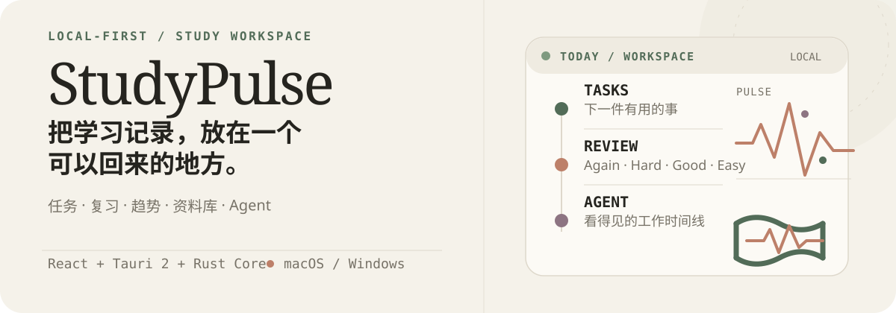
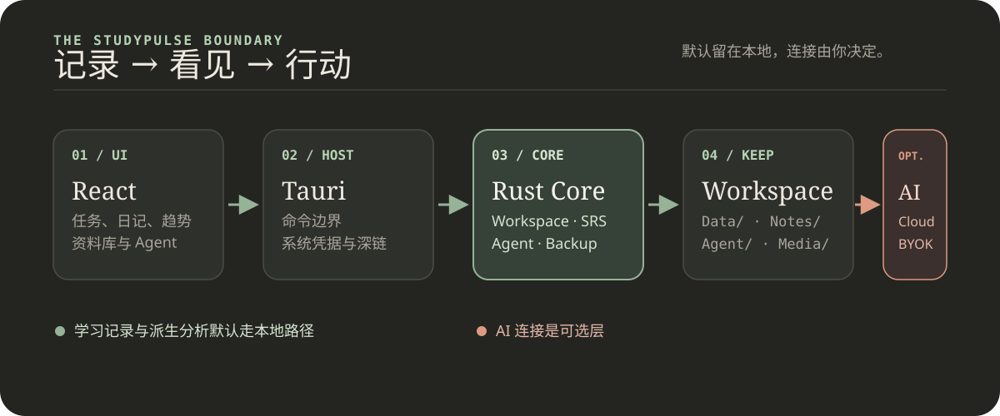

Record
Tasks, grades, exams, mistakes, study time, and diary entries.
Nothing important gets lost in a tab.StudyPulse
Plan what matters. Review what you missed. See your progress—all inside a local-first workspace.

Stop switching between task lists, notes, timers, flashcards, and AI tabs. Start one workspace for the whole study day.
Build your next study day ↗Less switching. More signal. StudyPulse turns scattered study activity into a rhythm you can actually follow.
Tasks, grades, exams, mistakes, study time, and diary entries.
Nothing important gets lost in a tab.Today snapshots, activity streaks, heatmaps, mood, energy, and subject trends.
Turn activity into a pattern you can act on.Turn mistakes into text flashcards with Again / Hard / Good / Easy feedback.
Let every mistake become a next rep.Use your library and a permission-aware Agent when the next step needs help.
Move from question to answer without losing context.Tasks, notes, timers, review, and diary in one place.
Patterns across time, mood, energy, and subjects.
The action stays visible after the plan is made.
No AI required. The core learning loop remains complete without a connected provider—then AI adds leverage when you want it.
AI can coach, research, plan, simulate, and visualize. Your core learning record still stays local, with your choice of connection.

Learning data, Agent runs, Notebook history, and imported sources stay in the selected Workspace.
Cloud tokens and BYOK keys go only to Keychain or Credential Manager—not Workspace, logs, or localStorage.
Write, destructive, and execute tools show a preview and ask for confirmation before they run.
Choose StudyPulse Cloud AI, any OpenAI-compatible BYOK endpoint, or no AI at all.
A portable Workspace gives every subject, session, and review a place to land. From there, the next move gets easier to find.
Create or open a local Workspace you can move, back up, and return to.
Tasks, exams, mistakes, time, diary, and sources stay connected.
Connect Cloud AI or BYOK only when coaching, planning, or research helps.
Open the desktop client and make the next useful action visible.
$ npm install $ npm run tauri:dev
Diary / Trends / Flashcards · backups · reports · AI Coach · Agent flow
Health/Recovery · cross-device sync · full calendar integration · signing and distribution